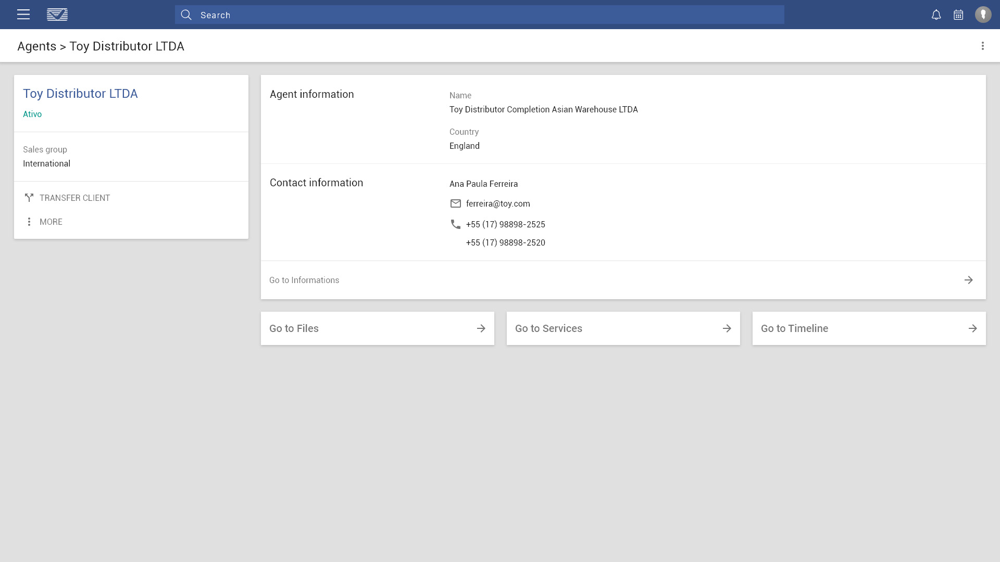

VILAGE Trademarks and Patens had a internal system responsible for supporting more than 100 employees in 29 cities in their daily routine attending more than 35,000 clients.
The proposition was to rebuild it, since its' last version was made with Bootstrap 2.
The new version it's made following Material Design concepts.
The first need was to comprehend what was called as first layer of the system.
An organogram came out as a result of this study.
To clarify the size of the system, this is the smaller or the 7 modules. And the simpler one.
The Dashboard is the first screen the user sees when logging into the system.
Therefore it contains diverse information regarding many subjects that might be interesting to the user.
One of the sections is Agents.
It's an area with informations about all international agents responsible for making connections between VILAGE and international clients and institutions.

The agent dashboard shows the more important and urgent information as quickly as possible.
Many different dashboards were mades, each to its needs.
Another important feature is to be able to add new information to the system.
infoVILAGE, the other side of the system, the one avaliable to the clients also had to be remade.
Some of its' screens can be seen below.
The Dashboard is the first screen the user sees when logging into the system.
It contains some of the more urgent and needed information to the user.
One of the more problematic functionalities of the first version of the system was the information table.
The standard was to be confusing, compressed and lacking proper visibility to important data.
The new version merges the data table with a search bar, being collapsed or not.
A smaller section of the system contains the user register screen and also the access permissions linked to it.
The main focus of infoVILAGE is to be able to show simple versions of complex informations to user who are not familiarized with many of the terms used.
This screen shows clearly the amount of interaction avaliable, showing a lot of information and also allowing the user to upload and download files.
Results of our researches shows that the user's most deared feature are the reports.
This report shows in a simple way which of the user's trademarks are in what part of its process. Either being approved, rejected and in process.
We have a side menu. It was the best option to save space and optimize the information flow.